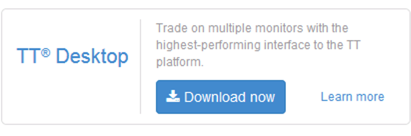

Downloading TT Desktop
To download the TT Desktop installation package:
-
Method 1:
-
In Microsoft Windows, log in to TT through a browser.
The following is displayed.

-
Click Download now.
-
Save the TTSetup.msi file to the desired location on your file system.
-
Method 2:
-
In Microsoft Windows, log in to TT through a browser.
-
Open an existing workspace, or create a new one.
-
From the workspace's File menu, select Download TT Desktop.
-
Save the TTSetup.msi file to the desired location on your file system.
-
Method 3:
-
Enter the trade.tt/desktop/download URL in your browser.
Note: TT Desktop is not supported for TT Crypto (crypto.trade.tt).
- Specify the location to save the TTSetup.msifile, if prompted. If your browser is configured to automatically put downloaded files in a specific folder, this step will not be necessary.
Note: Alternatively, you can download the installer directly by entering the trade.tt/desktop/download URL in your browser.
Installing TT Desktop
Note: If you have a previous version of TT Desktop installed on your system, you should manually uninstall it before proceeding.
To install TT Desktop:
-
Navigate to the location of the TTSetup.msi file you downloaded.
-
Double-click the TTSetup.msi file.

-
Click Next to install TT Desktop and progress through the installation dialogs. Then click Finish when the installation completes.

After the installation process completes, Trading Technologies icon ( ) is placed on your desktop.
) is placed on your desktop.
Adding TT Desktop for a UAT environment
If your company has access to the UAT environment and your company administrator has given you permission to access the environment, you can also install TT Desktop for the UAT environment.
To add TT Desktop for UAT:
-
Download the TTUatSetup.msi UAT installation package:
-
Double-click the TTUatSetup.msi file and following the installation instructions.